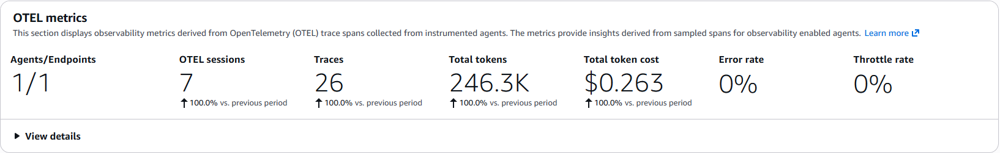

A bank has to be profitable.
Its contact center is one of its biggest costs.
are questions about a transaction: what a charge is, why it was declined.
6,661 a month
Agent-hours a month
Unrecognized charges
Your customer's right hand.
Not another chatbot. A partner who already knows them, for whatever they need from the bank.
Knows them before hello.
Their cards, charges, open cases, previous contacts and app events are loaded before the first word.
Knows why they're here.
It anticipates why the customer is reaching out, so the first message already answers it.
Has their back.
It checks an unrecognized charge, then blocks the card and opens the claim, only after the customer taps Yes.
The KPIs we aim to improve
One message, end to end.
A real conversation from our deployed stack, step by step.
Identity comes from the token, never from the model.
-
1
Customer signs in
Cognito hosted UI · PKCE
token 1 · customersub→ Runtime checks it -
2
Agent trades
subfor a Gateway tokenclient credentials · Pre-Token Lambda stamps the customer id
token 2 · gatewaysub+ customer_id→ Gateway checks it -
3
Every tool call
Hook overwrites
customer_idwith token 2's value · then Cedar, deny by default- permit9 tools, signed-in customer
- forbidsomeone else's id
- forbida write without a Yes
It knows the situation before it answers.
The model proposes. The customer decides.
list_card_transactionsexplain_transaction+ 4 moreblock_credit_cardopen_claimhuman_agent_hand_offblock_credit_card¿Bloqueamos tu tarjeta •••• 4497?No → nothing reaches the Gatewayopen_claim · fraud · $288.69¿Abrimos el reclamo?No → nothing reaches the Gatewayhuman_agent_hand_off¿Te paso con una persona?Sí → Cedar ALLOW in 80 msEvery turn leaves a trace you can replay.

prompt.versionAuthorizeActiontokens per chatA prompt ships only when code says it passed.
- 10 frozen casesnormal → adversarial
- Harness plays the customer3 runs each
- Code grades25 checks · 4 unsafe
- AWS second opinionreads the spans
- Reportpass^1 · pass^3pass^1 · pass^3pass^1: share of all runs that pass. pass^3: cases that pass on all 3 runs, with a Wilson 95% interval, because 10 cases is a small sample.
4 probe prompts · $0.40 · 270 graded sessions
Secure by construction. Observable by default. Measured before it ships.
Your contact center is expensive.
Keep it low, and increase your margins.
Global reference: $7.20 per inbound callGlobal benchmarkContactBabel, 2026 US Contact Center Decision-Makers' Guide: $7.20 average cost per inbound call. Gartner's 2019 poll gives $8.01 per live-channel contact. Published benchmarks run higher than our LATAM figure because they assume longer calls and include after-call work, technology and overhead.
| vs LATAM $1.23 | vs global $7.20 | a month, LATAM / global | |
|---|---|---|---|
| DeepSeek v3.2 | $1.13 92%Saved vs a person, LATAM$1.23 − $0.099 = $1.13 (92%)The human cost per contact minus LedgerLens on DeepSeek v3.2. | $7.10 99%Saved vs a person, global$7.20 − $0.099 = $7.10 (99%)ContactBabel's 2026 cost per inbound call minus LedgerLens on DeepSeek v3.2. | $7,536 / $47,302Saved a month, DeepSeek v3.2$8,193 − $657 = $7,536$47,959 − $657 = $47,302People: 6,661 contacts × $1.23 = $8,193, or × $7.20 = $47,959. LedgerLens: 6,661 × $0.0986 (the unrounded total) = $657. 6,661 is the average of transactional contacts a month in the dataset. |
| Haiku 4.5 | $1.07 87%Saved vs a person, LATAM$1.23 − $0.157 = $1.07 (87%)The human cost per contact minus LedgerLens on Claude Haiku 4.5. | $7.04 98%Saved vs a person, global$7.20 − $0.157 = $7.04 (98%)ContactBabel's 2026 cost per inbound call minus LedgerLens on Claude Haiku 4.5. | $7,150 / $46,916Saved a month, Haiku 4.5$8,193 − $1,043 = $7,150$47,959 − $1,043 = $46,916People: 6,661 contacts × $1.23 = $8,193, or × $7.20 = $47,959. LedgerLens: 6,661 × $0.1566 (the unrounded total) = $1,043. 6,661 is the average of transactional contacts a month in the dataset. |
| Sonnet 4.5 | $0.85 69%Saved vs a person, LATAM$1.23 − $0.383 = $0.85 (69%)The human cost per contact minus LedgerLens on Claude Sonnet 4.5. | $6.82 95%Saved vs a person, global$7.20 − $0.383 = $6.82 (95%)ContactBabel's 2026 cost per inbound call minus LedgerLens on Claude Sonnet 4.5. | $5,640 / $45,406Saved a month, Sonnet 4.5$8,193 − $2,553 = $5,640$47,959 − $2,553 = $45,406People: 6,661 contacts × $1.23 = $8,193, or × $7.20 = $47,959. LedgerLens: 6,661 × $0.3833 (the unrounded total) = $2,553. 6,661 is the average of transactional contacts a month in the dataset. |
Assumes the contact is fully automated. A contact handed to a person still costs a human contact.
Sources
- FusionCX, Colombia vs. US Call Center Costs (2026)
- ContactBabel, The US Contact Center Decision-Makers' Guide (2026)
- Gartner poll via DestinationCRM (2019)
- Amazon Bedrock and Guardrails pricing
- Amazon Bedrock AgentCore pricing
- Amazon Cognito pricing · Aurora DSQL pricing · PrivateLink pricing · API Gateway pricing
LedgerLens. Every customer, understood.